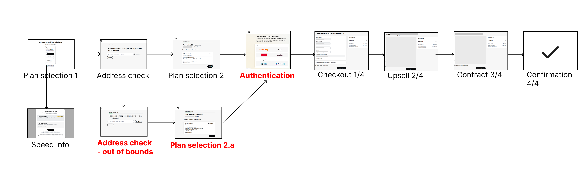
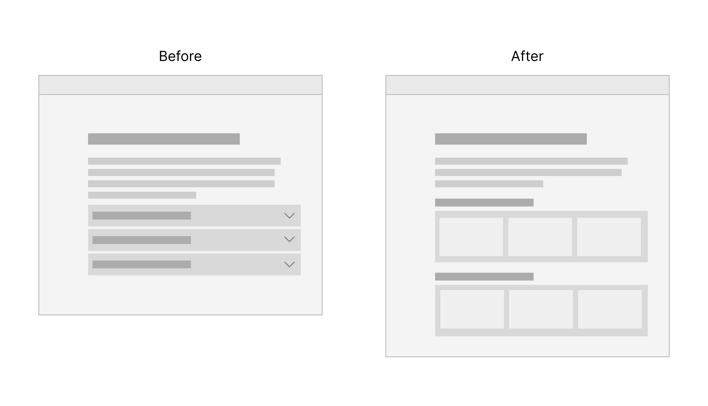
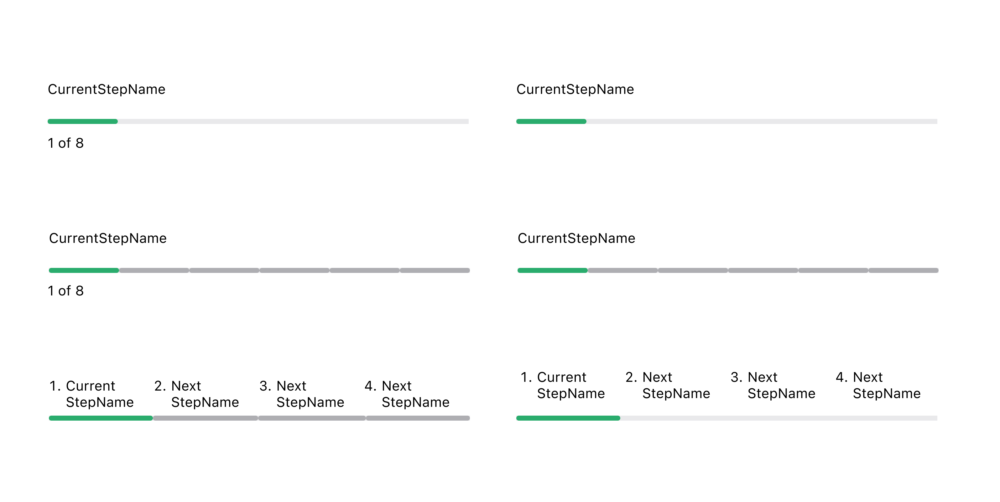
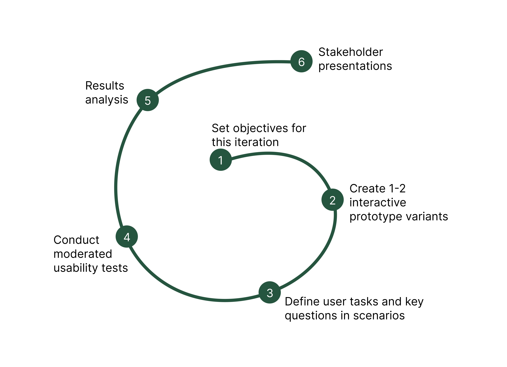

The Story
A signup flow that kept changing underneath us
The challenge wasn't just that the flow was long — it was that it kept evolving. New products, new legal requirements, new upsells. Every quarter brought changes that could silently reintroduce friction we'd already solved.
I dug into analytics, heatmaps, and customer service call logs to map where users were dropping off and why. Then I brought those findings into quarterly stakeholder meetings as the foundation for prioritisation decisions — not gut feeling, actual data.

The authentication problem nobody warned us about
A mandated strong authentication step was causing genuine panic. In Latvia, users were confusing it with signing a contract — and abandoning. Not a UX edge case; a cultural and copy problem disguised as a technical one.
I designed and tested multiple variations of the step's placement and microcopy until we found a version that felt like reassurance rather than bureaucracy. Same logic applied to upsells: strategic placement and honest copy meant users perceived add-ons as useful, not manipulative.

Progress bars are harder than they look
When a flow has dynamic step counts — more steps if you pick a bundle, fewer if you don't — a standard progress bar lies to users. I led the design and testing of several visualisation approaches to find one that stayed honest without causing disorientation.

How we actually tested things
As part of a two-person UX research team, I built and ran the full testing pipeline: interactive prototypes (usually two variants), moderated think-aloud sessions over video, post-session coding of recordings, and stakeholder presentations with clear recommendations.
The goal was never to prove we were right — it was to find out fast where we were wrong, so we could fix it without a costly redesign.
